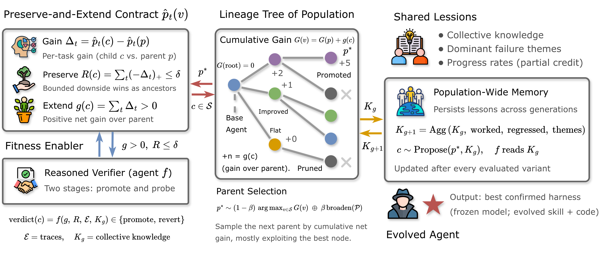
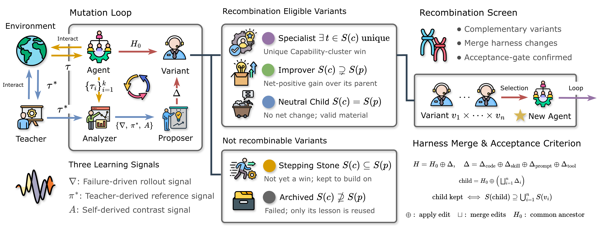

DarwinX: Evolving Agent Harnesses Through Natural Selection
TL;DR
- "DarwinX: Evolving Agent Harnesses Through Natural Selection" (arXiv 2608.07545; Yifan Zhang, Yutong Dai, Juntao Tan, et al., with Silvio Savarese, Ran Xu, Zeyuan Chen — Salesforce AI Research/Agentforce) treats harness self-evolution as population selection: an archive of harness lineages, a preserve-and-extend contract that admits a child only if it solves something new without regressing what its parent solved, and cross-lineage recombination of complementary specialists. The base model is frozen throughout; fitness is purely each benchmark's own verifier at avg@\(k\) — no gold solutions, no hand-picked winners.
- One loop adds ~17 points on average across four regimes of increasing train/test separation: Terminal-Bench 2.1 rises 75.5% → 83.2% on frozen GPT-5.5 (84.7% on GPT-5.6 Sol, the verified-leaderboard frontier); TerminalWorld held-out reaches 68.3%, above Claude Code's 65.9%; WebArena-Infinity real-task pass@1 goes 43.5% → 93.0% audit-clean while invalid trajectories fall 293 → 17; and the TB2.1 harness transfers unchanged to SWE-bench Verified at 84.2%.
- The cleanest evidence for keeping a population: on TerminalWorld the in-loop proxy saturates at 1.000 yet held-out is 68.3% — and four proxy-fit specialists solve 24–27 held-out tasks each while their merge solves 28. Greedy single-lineage search would have collapsed onto an overfit incumbent; the archive absorbed the overfitting.
Why this matters
Nearly every self-improving-agent system — SICA, DGM, HarnessX, the skill/prompt optimizers — has converged on the same inner loop: roll out, reflect, propose a bounded edit, gate against a regression signal. DarwinX asks the complementary question this reading list keeps circling: what selection process should wrap that loop? Two failure modes motivate the answer. Path dependence: single-lineage self-editors get biased by early edits and plateau (Robeyns et al. report exactly this for SICA). Cross-task interference: an edit that fixes one task family silently regresses another, and the wider the task distribution, the sharper the pathology.
The positioning against DGM is the sharpest way to see the contribution. DGM already has an archive with stochastic parent selection, but it mutates one parent at a time and scores the child only against that parent — complementary lineages are never brought back together, and a gain carries no obligation to hold what it displaces. DarwinX makes that obligation explicit (a win may not cost more than a bounded regression elsewhere) and adds a merge operator with a set-theoretic acceptance criterion: the merged child must cover the union of its parents' solved sets. The punchline is the paper's closing line: harness selection "turns evaluation compute into durable capability" — the harness is the surface that can still move when weights can't.
The core idea
Score every harness variant by its per-task solve rate \(\hat{p}_t(v)\) under noisy avg@\(k\) measurement. For a child \(c\) of parent \(p\), summarize the per-task change into a net gain and a one-sided regression mass:
where \(\hat{p}_t(\cdot)\) is the avg@\(k\) solve rate on task \(t\) and \((x)_+ = \max(x,0)\), so \(R(c)\) counts only what the child gives up. The preserve-and-extend contract admits a child iff \(g(c) > 0\) and \(R(c) \le \delta\); a reasoned verifier agent \(f\) then adjudicates with the trial evidence \(\mathcal{E}\) and the population's shared memory \(K_g\):
Crucially the selector is two-speed — permissive about trying, strict about trusting. A promoted child enters the tree on a bounded-downside, possibly noisy signal, but may only steer future search after a higher-fidelity re-test plus a preservation probe re-sampling the lineage's known solved set. This is how the search moves fast without letting luck accumulate — the failure mode the "gains come from repeated sampling" critique (see connections) says plagues this literature.

Figure 2 from the paper: the selection loop with the model frozen — preserve-and-extend contract (left), archive of alternative lineages (middle), shared cross-generation memory (right).Parent selection ranks archive nodes by cumulative lineage gain \(G(c) = G(p) + g(c)\) — raw scores aren't comparable because variants are screened on different task subsets — and samples
where \(\mathcal{S}\) is the steering set of confirmed variants, \(\mathcal{P}\) the wider population, and \(\beta\) the exploration rate. Every scored variant is retained, including losers: writing \(S(v)\) for a variant's solved set, children are classified as improvers (\(S(c) \supsetneq S(p)\), eligible ancestors), neutral, stepping stones, or archived trades — the latter two feed back only distilled lessons, but a globally weaker specialist may hold the one edit that, combined with another branch's, unlocks a task neither solves alone.
How it works

Figure 3 from the paper: the mutation loop and its three learning signals (left), variants classified by how their solved set changes (middle), and the merge operator (right).The harness spans two editable layers — skill (prompts, memory, distilled knowledge) and code (tools, control flow, the agent loop). Edits are additive, and three evidence sources share one edit interface, routed by task regime: failure-derived diagnosis (\(\nabla\)) is the default; teacher-derived demonstrations (\(\pi^*\)) handle walls (no successful rollout exists); self-derived contrast (\(A\)) between the agent's own passing/failing rollouts handles variance-band tasks. When variants \(v_1,\dots,v_n\) solve complementary tasks, a merged child is materialized from common ancestor \(H_0\) as \(H = H_0 \oplus \Delta\) with \(\Delta = \Delta_{\text{code}} \oplus \Delta_{\text{skill}} \oplus \Delta_{\text{prompt}} \oplus \Delta_{\text{tool}}\), kept iff \(S(\text{child}) \supseteq \bigcup_i S(v_i)\). A failure-mode classifier aggregates benchmark-wide themes into shared memory, \(K_{g+1} = \mathrm{Agg}(K_g, \text{worked}, \text{regressed}, \text{themes})\), so the proposer targets systemic bottlenecks rather than per-task patches.
Initialize archive A = {base harness H_base}, shared memory K = {}
For each generation g:
p* ← sample parent: exploit argmax lineage-gain G over confirmed set S
(prob 1-β), else Broaden over full population P # eq. above
assign p*'s branch a capability cluster (e.g. numerical-ML, low-level systems)
partition cluster tasks by p*'s k-sample record:
reliable solves | variance-band | walls
pick signal: wall → teacher trajectory π*; variance-band → self-contrast A;
else → failure-derived diagnosis ∇
c ← Propose(p*, K): one additive edit (prompt/skill/tool/control-flow)
screen c at avg@3 on a rotating task subset → per-task p̂_t(c)
compute g(c), R(c); verdict ← f(g, R, evidence, K)
if verdict = promote:
preservation probe: re-sample lineage's known solved set
confirm at full avg@5 before c may steer future search
classify c by solved-set: improver / neutral / stepping-stone / archived
add c to archive A (never delete); update K with worked/regressed/themes
periodically: find complementary specialists {v_i}, merge H0 ⊕ ⊕_i Δ_i,
keep merged child iff S(child) ⊇ ∪_i S(v_i), same confirmation rules
Final agent ← best confirmed node (or merged Monet) at official avg@k
Evaluation is a ladder of four regimes separating evolution signal from test: (1) in-domain test-time evolution on Terminal-Bench 2.1 (evolve and report on the same 89 tasks); (2) held-out generalization on TerminalWorld (evolve on 94 training tasks, freeze, single-attempt pass@1 on 41 disjoint tasks); (3) synthetic-to-real on WebArena-Infinity (evolve on 300 synthetic intents scored by an LLM judge — the pipeline never reads the real suites — report deterministic pass@1 on 1,260 real tasks); (4) cross-benchmark transfer (the TB2.1 harness run unchanged on all 500 SWE-bench Verified issues).
Results
- Terminal-Bench 2.1: 75.5% → 83.2% avg@5 on frozen GPT-5.5 (+7.7; +5.2 over the neutral Terminus-2 harness at higher effort on the same base), and 84.7% on GPT-5.6 Sol at medium effort — above Claude Code + Fable 5 (83.8% at xhigh) on the verified leaderboard. Gains land where the frozen base has headroom (ML & scientific computing +14.8, data/database +13.8); strong clusters barely move and none regresses beyond noise — the empirical footprint of the contract. Nor is it just compute: the six newly solved tasks get ~2× turns and ~4× tokens of verify-and-retry effort; the 69 already-solved tasks stay at 13 vs 12 turns.
- TerminalWorld held-out: 28/41 (68.3%) on Opus 4.8 vs 25/41 base and 65.9% Claude Code; the training proxy saturated (0.505 → 1.000) with a 31.7-point generalization gap, and the merge of four specialists (24–27 solved each) is what wins.
- WebArena-Infinity: audit-clean pass@1 43.5% → 93.0% (+49.5 matched-model; +6.9 over GPT-5.5 + Browser Use, the strongest same-model baseline). Capability and compliance rise together: invalid trajectories fall 293 → 17, and the evaluation-plane, privileged-host, and exploit mechanisms disappear entirely.
- SWE-bench Verified transfer: 421/500 (84.2%) official pass@1, +3.4 over a fix-skill reference harness, with zero SWE-V feedback.
- What evolved: on TB2.1, seven added skills, all in one verification/artifact-contract family (derive the acceptance contract, verify the graded artifact, ground outputs in real tool execution, fix-and-recheck). The submission audit found no harness-level cheating — one confirmed shortcut in 370 rewarded trajectories was a per-trial policy lapse, not an evolved exploit.
How it connects
- Recursive Harness Self-Improvement (this list): the Sakana/Berkeley line is single-lineage recursion — each generation's harness builds the next. DarwinX targets exactly that design's path dependence, and TerminalWorld's specialists-beat-incumbent result is the empirical case for the population.
- Living-Harness (this list): Living-Harness gates episode-level commits (schema/scope/evidence/constraint/merge gates) into memory and a state graph; DarwinX's preserve-and-extend contract plus preservation probe is the same commit discipline lifted to population-level variant admission. Both keep weights frozen and treat harness state as accumulating capital.
- EvoHarness-RL (this list): the RL answer to the same question — train harness usage into the policy with weight updates. DarwinX is the pure-inference dual: no gradient, selection only. The natural hybrid is the paper's own Appendix E sketch.
- No Universally Best Harness for Automated Discovery (this list): if no single harness dominates across tasks, a single-incumbent search optimizes a non-existent object — an archive of complementary specialists with a merge operator is the structurally correct response, and Figure 6 is the direct evidence.
- Rethinking Harness Evolution: Gains Come from Repeated Sampling, Not Generalizable Design (tracked, no tutorial): the strongest skeptical prior against this genre. DarwinX's answer is architectural — avg@k confirmation, preservation probes, held-out/audited reporting — but TB2.1 remains test-time evolution on the evaluation suite, so the skeptic's concern applies most to the headline number and least to TerminalWorld/WAI.
Critical take
The matched-model deltas are real, but read the baselines carefully. On WAI, base Monet is a coding agent bolted onto a browser scoring 43.5% where Browser Use on the same model scores 86.1% — the +49.5 headline is mostly recovery from a weak starting harness; the honest SOTA margin is +6.9. The recombination story is thinner than the framing: on WAI every attempted merge was reverted; merge demonstrably paid off only on TerminalWorld, where the margin over Claude Code is one task (McNemar \(p = 1.0\)) and over base Monet three (\(p = 0.45\)). The authors concede the archive, parent selector, and merge operator were never independently ablated — "population beats single lineage" is a plausible system-level claim, not a measured one. The procedure is base-sensitive (TerminalWorld on GPT-5.5 lands at 56.1%, below Terminus-2's 61.0%; Opus is the reported headline), Monet is proprietary so nothing is reproducible, and total evolution compute is never reported — avg@5 confirmations over 89 tasks across many generations is an enormous evaluation bill for a method pitched as "evaluation compute → durable capability" (inferred from the protocol description — verify in the paper). The reward-hacking audit is genuinely better than the field's norm, though: selection that re-verifies wins appears to select against fragile verifier-gaming, and WAI's 293 → 17 invalid-trajectory drop is the first time capability and compliance have visibly risen together at scale.
If you remember three things
- Selection rule over inner loop: everyone shares the rollout–reflect–edit–gate loop; DarwinX's contribution is the wrapper — admit a child only if \(g(c) > 0\) and \(R(c) \le \delta\), keep every variant in an archive, merge complementary specialists, and require \(S(\text{merged}) \supseteq \bigcup_i S(v_i)\).
- Two-speed trust: promote on bounded-downside noisy evidence, but let a variant steer only after full avg@k re-confirmation plus a preservation probe on the solved set — recall during exploration, precision during evaluation.
- The population absorbs proxy overfitting: TerminalWorld's in-loop score saturated to 1.000 while held-out was 68.3%, and the merge of four non-best specialists beat every individual — the concrete argument for archives over incumbents in harness evolution.